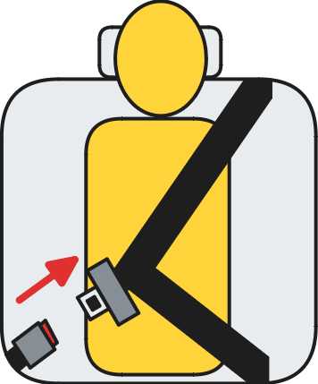

The Yawning Chihuahua
Home | Seatbelt reminder evaluation | Twitter | Instagram | YouTube | Legacy website
| TYC's 2026 Rear Seatbelt Reminder Evaluation | ||||
|---|---|---|---|---|
| Behaviour requirements for second-level warning in the 2nd-row outboard seats | ||||
| Testcase | Description | Audio signal | Visual signal | |
 |
occupant does not fasten seatbelt | REQUIRED | REQUIRED | |
 |
occupant takes off seatbelt | REQUIRED | REQUIRED | |
 |
seatbelt not fastened on an empty seat | NOT PERMITTED | NOT PERMITTED | |
 |
seatbelt taken off on an empty seat | NOT PERMITTED | NOT PERMITTED | |
| Forthcoming MoRTH regulation AIS-145 Amd. 6 | ||||
|---|---|---|---|---|
| Interpreted behaviour requirements for second-level warning in all fixed rear seats | ||||
| Testcase | Description | Audio signal | Visual signal | |
|
occupant does not fasten seatbelt | NOT REQUIRED | REQUIRED | |
| occupant takes off seatbelt | REQUIRED | REQUIRED | ||
|
seatbelt not fastened on an empty seat | PERMITTED | PERMITTED | |
|
seatbelt taken off on an empty seat | PERMITTED | PERMITTED | |